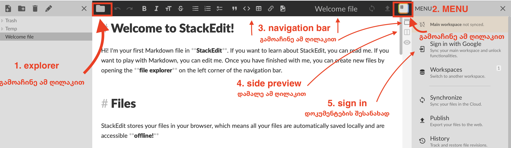

ბონუს თემა/პრეზენტაცია
ბონუს პრეზენტაციის ქულისთვის ბლოგ პოსტის სტილში უნდა დაწეროთ თემა/სტატია ტექნოლოგიებთან დაკავშირებით. google doc და microsoft word-ის მაგივრად, ტექსტს დაწერთ markdown ფორმატში. ასევე, დავალებას აქვს შუალედური დედლაინები. ეს დავალება ინდივიდუალურად კეთდება (ანუ გუნდურად არა).
- ყველა სტუდენტისთვის თითოეულ შუალედურ ეტაპზე არის ერთი დედლაინი
- ბონუს თემის ჩაბარება შესაძლებელია მხოლოდ მოთხოვნილი ფორმატის და ინსტრუქციის დაცვით
- თითოეული ეტაპის მოთხოვნები და წესები გამოქვეყნდება ამ გვერდზე
- რომელიმე ეტაპის დედლაინის გამოტოვების ან წესების დარღვევის შემთხვევაში თემა არ მიიღება.
დავალების მიზნები
ამ დავალებით, ცოდნის გარდა, ბევრი სხვა მნიშვნელოვანი უნარი მინდა განავითარო:
თემატური
- ტექნოლოგიების შესახებ ინფორმაციის მოძიება
- ახალი სამსჯელო კითხვების მოფიქრება
- დამწყებისთვის გასაგებ ენაზე
ტექნიკური
- microsoft word-ის გარდა სხვა ტექსტ ედიტორის გამოყენება
- უცხო ინტერფეისში პრიმიტიული ფუნქციების დამოუკიდებლად პოვნა
მუშაობის სტილი
- დავალებას აქვს რამდენიმე შუალედური ეტაპი, რაც გულისხმობს რომ იძულებული იქნები რამდენიმე კვირა იმუშაო თემაზე და არა დედლაინამდე 1 საათით ადრე დაიწყო.
- სტილისტური მოთხოვნები არის გათვლილი ჩემი ცოდნიდან და გამოცდილებიდან copywriting-ზე. ეს დაგეხმარება დაინახო განსხვავება გრძელ ესესა და სტრუქტურირებულ, ინფორმაციის მიწოდებაზე
- ეტაპების დაყოფა ასევე საშუალებას მაძლევს თითოეულის მოთხოვნები, რჩევები და მითითებები უფრო მეტი იყოს და წერის პროცესის ყოველ ეტაპზე პროდუქტიულად იმუშაო.
მოთხოვნები
ყველა ეტაპის მოთხოვნილი ფორმატი არის markdown. სხვა ფორმატის ფაილები (word, google doc, etc) არ მიიღება. მარკდაუნი არის ღია და მარტივი ტექსტური ფორმატი, მისთვის არსებობს უამრავი ვებ/ლოკალური ედიტორი. ამ გვერდზე მოცემულია ერთ-ერთი მათგანის, http://stackedit.io -ს ინსტრუქცია. სურვილის შემთხვევაში შეგიძლია გამოიყენო ნებისმიერი სხვა ალტერნატივა, თუმცა თუ არ ხარ დაინტერესებული სხვა გარემოს ძებნით, http://stackedit.io სრულიად საკმარისია
ედიტორის გამოყენება, სამუშაო ფაილის გახსნა და ატვირთვის ინსტრუქცია წერია ქვემოთ
პირველი ეტაპი - თემის არჩევა
- უნდა მოიფიქრო სამი ვარიანტი თემისთვის, დალაგებული უნდა იყოს შენი პრეფერენციით (რომელი უფრო გირჩევნია)
- თითოეული თემისთვის საჭიროა
- მოკლე მოტივაცია - 1 ან 2 მოკლე პარაგრაფი
- სამი რესურსი - 3 სტატია, ან 2 სტატია და 1 ვიდეო/სხვა წყარო
- თემის არჩევისას მოერიდე ზედმეტად ზოგად საკითხებს, მაგალითად "რა არის ბიტკოინი" ან "როგორ მუშაობს vpn". შეგიძლია, რომ თემის ნაწილში ახსნა მუშაობის პრინციპი, თუმცა კითხვას უნდა ქონდეს ღირებულება და აზრი - მაგალითად, "რატომ არსებობს ბიტკოინის რამდენიმე ვარიანტი" და "შესაძლებელია თუ არა vpn-ის სრულად აკრძალვა ქვეყანაში".
- შეგიძლია გამოიყენო ჩემი შეგროვებული რესურსები ძებნის დასაწყებად და ინსპირაციისთვის. პირდაპირ აქედან არ აიღო თემები, 1-2 რესურსი შეგიძლია მაგრამ დანარჩენი დამოუკიდებლად მოიძიე.
- ინდივიდუალური კონსულტაცია თემის არჩევაზე არ ხდება. თუმცა როგორც წესი ატვირთულ ფაილს მალევე ვნახულობ და შეიძლება დამატებითი რჩევები/მითითებებიც დავაკომენტარო.
წესების სხვა დარღვევა:
- ჩასმული ბმულები არ შეესაბამება სათაურს
- მოტივაციაში არ არის რელევანტური ტექსტი
- მოტივაცია გადაწერილია სხვა სტუდენტისგან
მეორე ეტაპი - მონახაზი
წინა ეტაპის ქულების ახსნა
0 - ატვირთული ფაილი არ იყო ვალიდური, ბონუს თემა არ მიიღება 0.5 - ძალიან სუსტი თემები, მონახაზისთვის რამე კონკრეტული თუ არ იქნა არჩეული, ბონუს თემა არ მიიღება 1 - თუ რაიმე შენიშვნა იყო, მონახაზისთვის გაითვალისწინე
მეორე ნაწილში მინდა რამდენიმე ახალი წყარო დაამატო, საკვანძო კითხვა/პასუხები ჩამოაყალიბო და ძალიან მოკლე მონახაზი გაწერო. სადემონსტრაციო ფაილი არის აქ.
მესამე ეტაპი - თემა
გადმოწერე მესამე ნაწილის ფაილი, ფორმატის ინსტრუქციით და დაწერე ტექსტი აქ. ჩათვალე, რომ წერ ბლოგ პოსტს/ინტერნეტ სტატიას.
ტექნიკური დახმარება

stackedit layout
- navigation bar (3): ზემოთ მუქი რაცაა
- explorer (1): დოკუმენტების სია, დააჭირე
folder iconnavigation bar-ის დასაწყისში, რომ გამოაჩინო - side bar/menu (2): option bar-ის ბოლო icon-ზე დაჭერით იხსნება
საწყისი ფაილის გახსნა
- გაიარე ავტორიზაცია (5)
- დამალე preview (4)
- პირველ ეტაპზე ფორმატირებაში რომ არ იწვალო, წინასწარ გავამზადე template, გადმოწერე აქედან (გახსენი და ctr+s)
- side bar > import/export > import markdown და მონიშნე გადმოწერილი ფაილი
ფაილის ატვირთვა კლასრუმზე
- navigation bar > დააჭირე დაიმპორტებულ ფაილს > დააჭირე edit ღილაკს (ფანქარი ახატია)
- template ჩაანაცვლე შენი emailid-ით (bonus_topic_imghv14)
- side bar > import/export > export as markdown
- გადმოწერილი ფაილი პირდაპირ ატვირთე კლასრუმზე